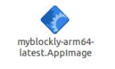
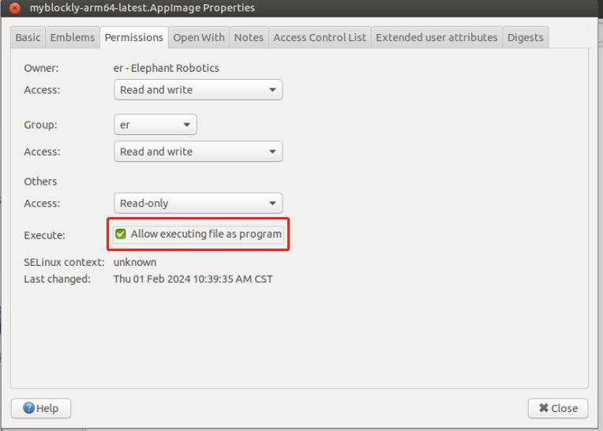
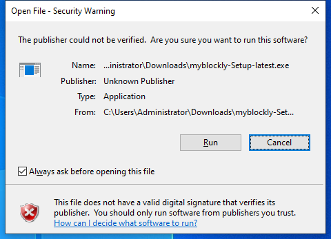
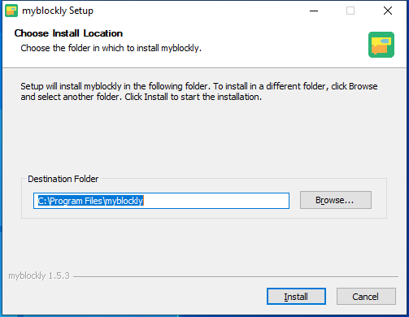
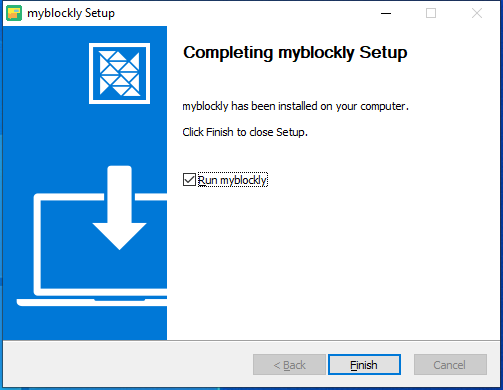
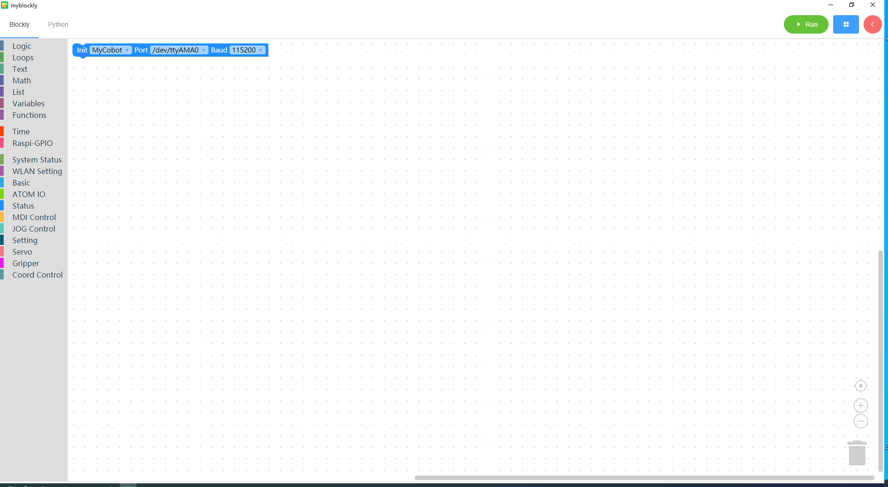
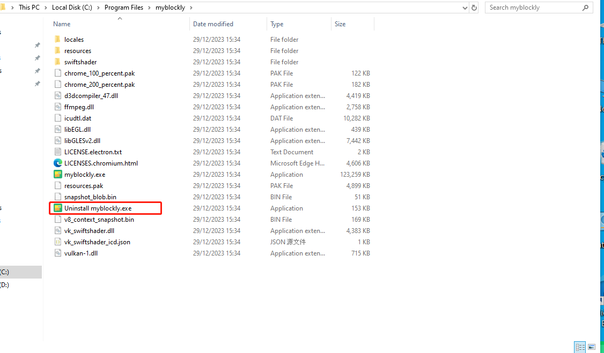

2 下载并安装 myBlockly
下载
下载链接 官方网站地址
您需要根据操作系统下载不同的安装包。
不同的后缀代表不同的系统，请下载相应的版本：
- *.AppImage : Linux 系统
- *.dmg : Mac 系统
- *.exe : Window 系统

安装
为 Linux 安装 myblockly
从官方网站下载 Linux 版本的 myblockly，你会得到如下所示的安装包

选择 myblockly-arm64-latest.AppImage，右键单击打开它，单击 Properties 打开它

点击进入 Permissions

在 Permissions 页面，选中 Allow executing file as program，然后单击 Close 按钮关闭弹出窗口

关闭弹出窗口后，双击安装包 myblockly-arm64-latest.AppImage，打开 myblockly
用于 Windows 安装
双击打开名为 myblockly-arm64-latest.AppImage 的文件

点击 Run

点击 Install 后，等待 myblockly 安装完成

安装完成后，点击 Finish 按钮打开并运行 myblockly


为 MacOS 安装 myblockly
从官方网站下载 Mac 版 myblockly，获得如下所示的安装包。双击打开。

注意：对于 MacOS，安装前请确保系统 "首选项->安全与隐私->常规" 和 允许来自应用商店和公认开发者的应用程序 已启用。
卸载
对于 Linux，卸载 myblockly
直接删除安装包即可
安装包的默认名称是
myblockly-arm64-latest.AppImage
卸载 Mac 版 myblockly
只需将 myblockly 移至应用中的垃圾桶即可
在 Windows 中卸载 myblockly
进入 myblockly 的文件目录，点击运行 Uninstall myblockly.exe


点击 Uninstall

myblockly 已卸载，单击 Finish 退出
更新
如果您想更新 myblockly，请访问 官方网站 下载最新版本。